Introduction
Sprint 0 was focused on building a strong foundation for the project. In our meeting with Dr. Laura Vorachek, the team confirmed priority features, issues and bugs that needed to be addressed as well as improvements we could offer.
Project
Track our milestones from planning to final delivery. The active phase highlights what Team 13 is building right now.
Back to HomeSprint 0 was focused on building a strong foundation for the project. In our meeting with Dr. Laura Vorachek, the team confirmed priority features, issues and bugs that needed to be addressed as well as improvements we could offer.

.jpeg)

During this phase, the team began implementing key fixes while also responding to guidance to migrate to a newer Django version, while solving admin login and local deployment issues.

Sprint 2 focused on polishing admin features, fixing UI bugs, and adding export and analytics improvements. The work is complete and consolidated in the commit history below.
Interactive Timeline
Click any card to expand the commit title, what changed, and why it mattered.
New Work
These screenshots highlight the newest admin visualization work added to the project.
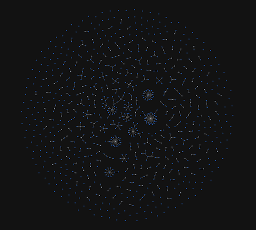
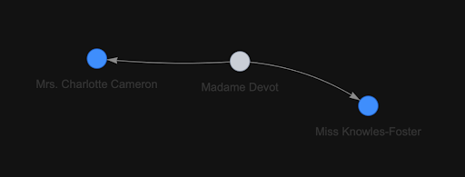
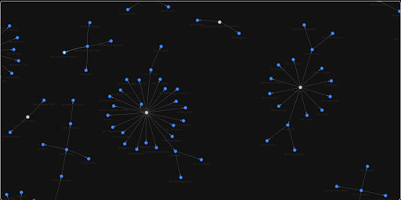
This update established the project’s working base and made the repository easier to run locally.
This round refined the local development workflow and made the project easier to configure safely.
This update corrected a display bug and added a clean local database copy for development and testing.
This change made the Django admin members page more useful by exposing more data and filters.
Added initial automated test coverage and documentation for developers, including important notes about the admin "honeypot" login behavior to prevent lockouts.
Fixed a search issue when users type full names by splitting queries into terms and requiring each term to match name fields. Also removed the 8-result limit from the members page.
Added a new Django admin page that calculates and displays average membership length based on members' date ranges.
Introduced an interactive admin visualization for proposer relationships using a directed graph. Includes name normalization and a minimum component size filter to reduce noise.
Upgraded the project to Django 5.2.12 with all compatible dependencies. Updated settings for the new django-axes backend and cleaned up legacy configurations.
Added an Excel export action to the Django admin "Members" and "Honorary Members" pages, allowing admins to download data in spreadsheet form.
Cleaned up admin export options by removing the legacy .xls format that was not working correctly.
Merged multiple "wishlist" improvements including the Django 5.2.12 upgrade, improved member search, proposer graph, and membership statistics features.
Added a new other_profession field to the Member model and integrated it through the admin and CSV import pipeline for storage and searching.
Visual Progress
Before and after screenshots showing the UI changes across the project.
Homepage redesign and improvements
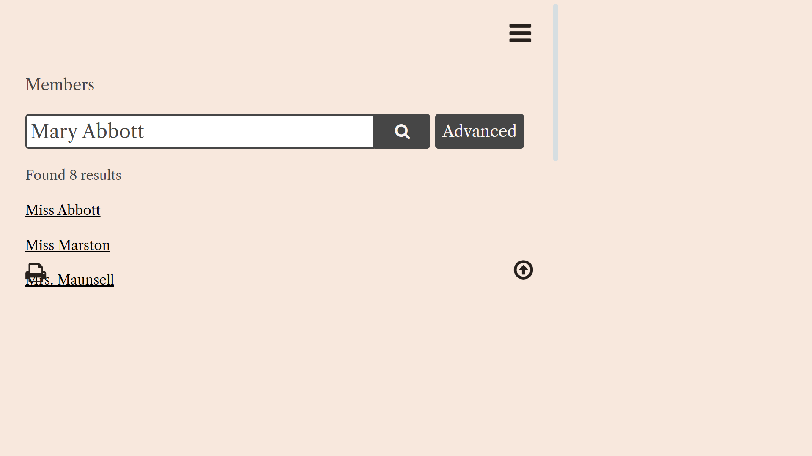
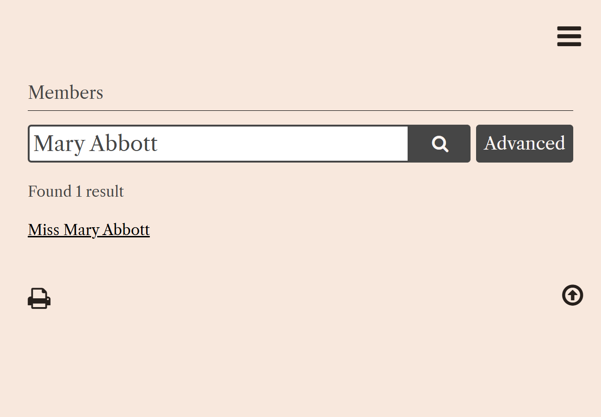
Member search: full-name search behavior
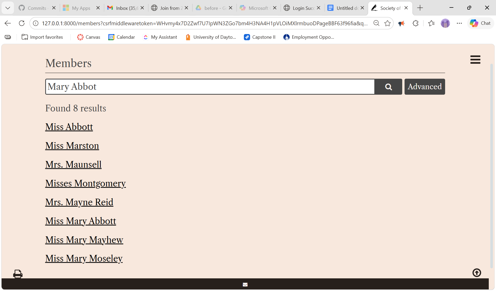
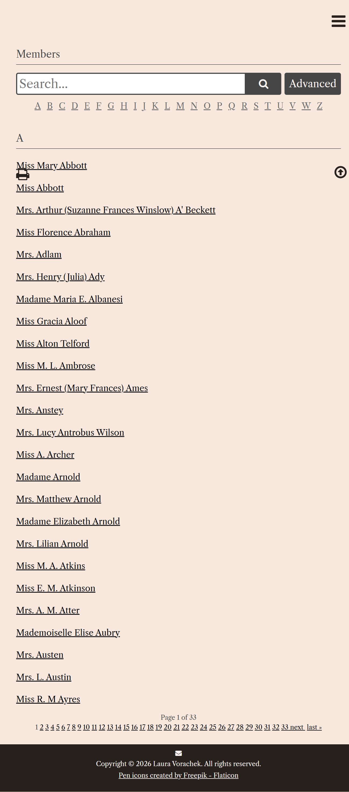
Members listing and search improvements
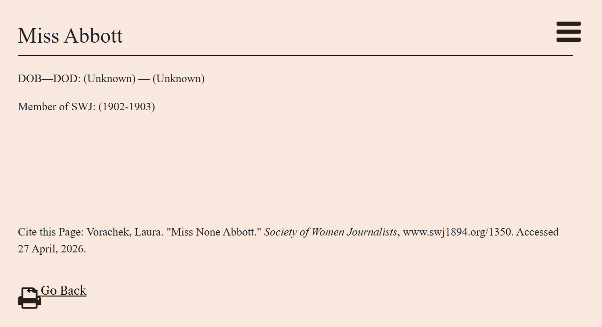
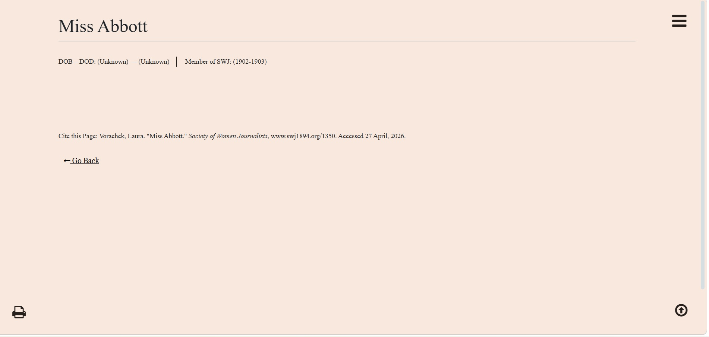
Name bug fix and display cleanup
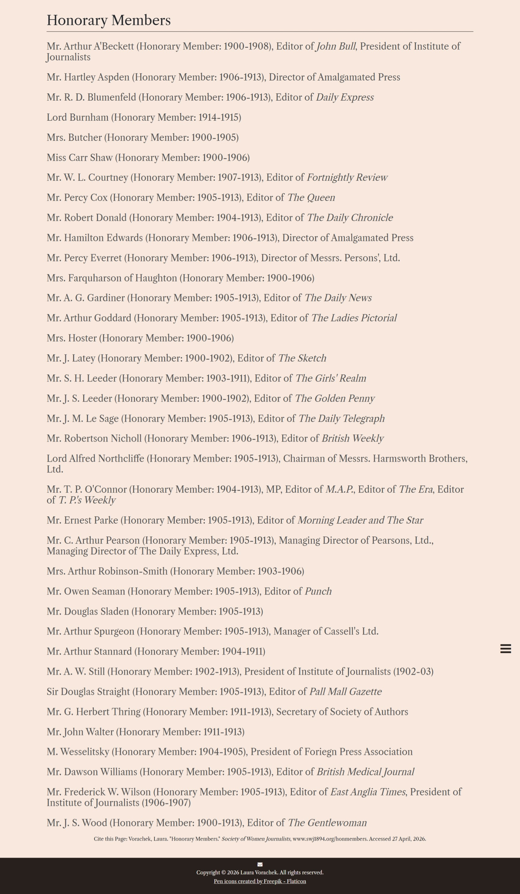
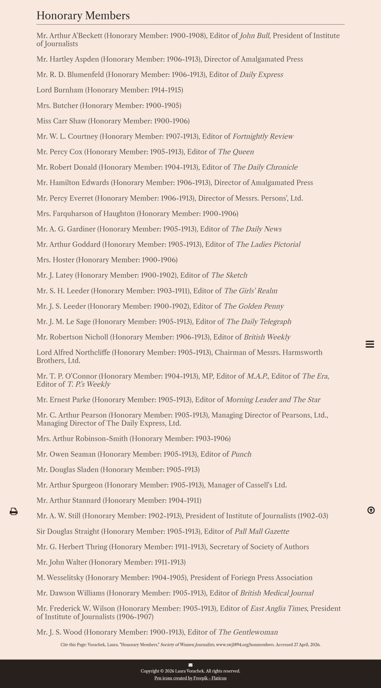
Honorary members page update